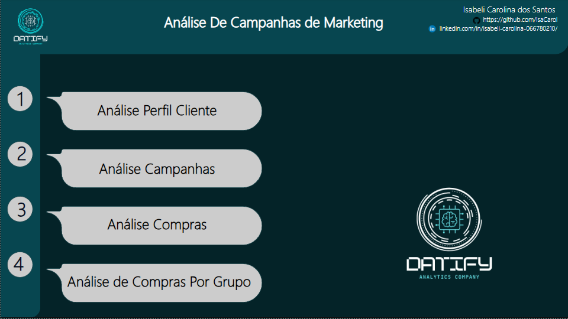
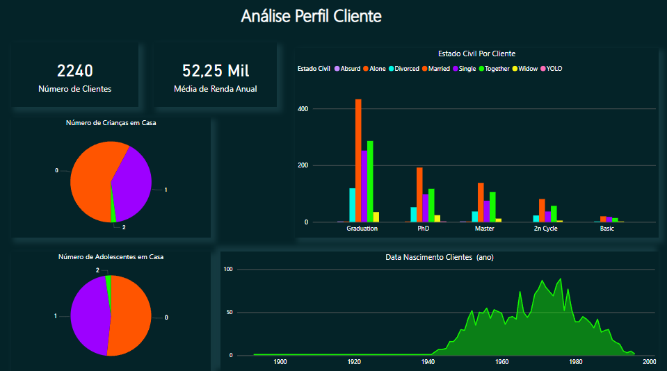
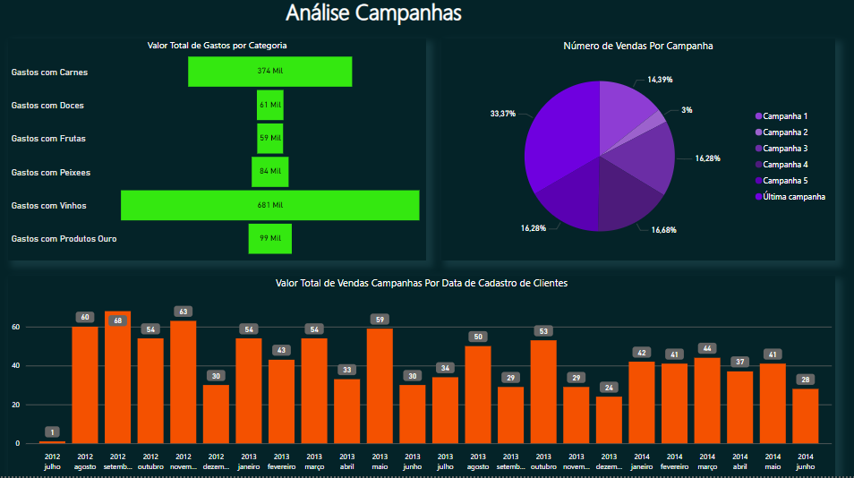
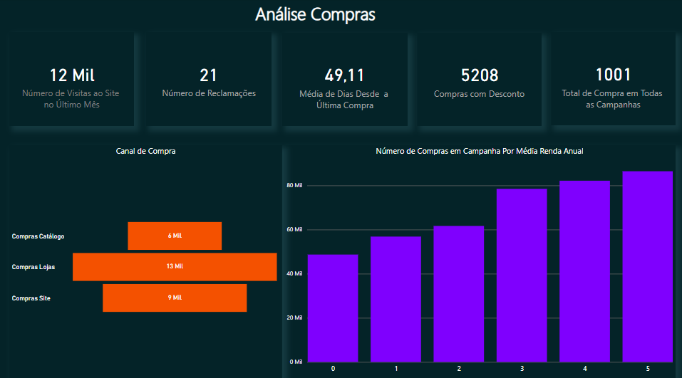
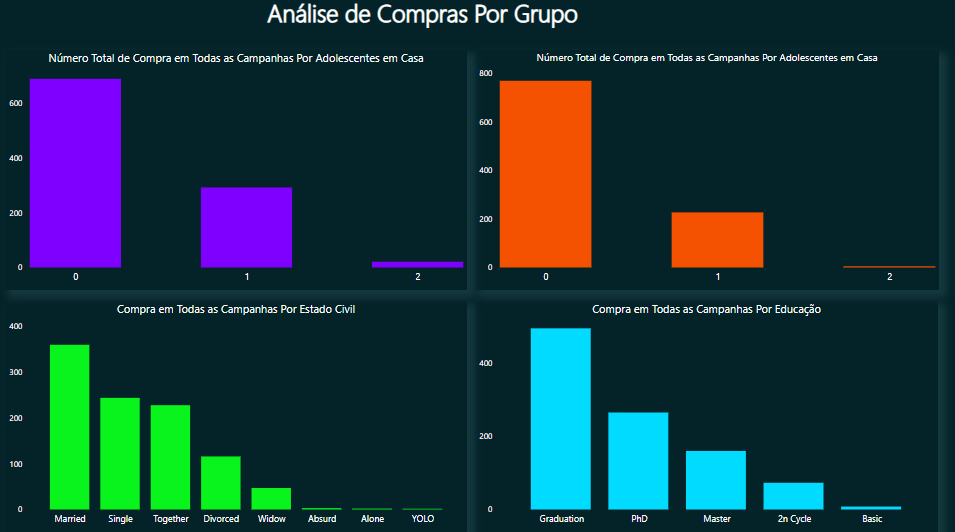

Bem-vindo(a) ao relatório de análise de campanhas de marketing
O objetivo deste relatório foi analisar o desempenho das campanhas de marketing, o perfil do cliente e os produtos/categorias com mais rendimento.
Os dados foram extraídos do Kaggle, e você pode acessá-los seguindo o link: https://www.kaggle.com/datasets/rodsaldanha/arketing-campaign.
Essa foi uma análise um pouco mais simples, sendo que as ferramentas utilizadas foram apenas o Site da fonte de dados, o Excel e o Microsoft Power BI.
Verifiquei a consistência dos dados e fiz a transformação e limpeza necessária e comecei a análise.
Página Inicial
No perfil do cliente, é possível observar que tanto para crianças em casa quanto para adolescentes, os números são bem parecidos. Mais de 50% dos clientes não possuem filhos e apenas uma pequena parte possui 2 filhos.
Também é possível observar que a maior parte dos clientes tem uma graduação ou são casados, solteiros, ou estão namorando ou morando juntos. Há poucos clientes com uma formação básica.
Em relação ao ano de nascimento, é possível observar que a maioria dos clientes possui idades entre 40 e 60 anos.
Perfil Cliente
Na análise das campanhas, é possível observar que a campanha com maior retorno foi a última realizada, enquanto a campanha de número 2 teve o menor retorno.
Em relação aos gastos com produtos, é notável que a maioria dos clientes gasta mais com vinhos e carnes, e menos com doces e frutas.
Também temos a relação do total de compras durante o período de 2012 a 2014.
Análise Campanhas
Nesta análise, é possível ver a quantidade de visitas ao site, o número de reclamações, a média de dias que os clientes ficam sem comprar desde a última compra, a quantidade de compras com descontos, e o total de compras entre todas as campanhas juntas.
Podemos observar que os clientes preferem fazer compras diretamente nas lojas e evitam compras por catálogo.
Por último, temos a quantidade de compras nas campanhas por média salarial.
Análise Compras
Na análise de compras por grupos, temos o total de compra em todas as campanhas em relação à quantidade de adolescentes e crianças em casa. É notável que quanto menos ou nenhum filho, as compras são bem maiores.
Em relação às compras por estado civil, clientes casados compram muito mais do que os solteiros.
Da mesma forma, clientes com graduação têm um poder de compra muito maior do que clientes com formação básica.
Análise Compras Grupo
